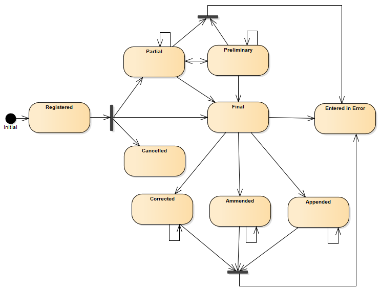

HL7 Europe Laboratory Report
0.2.0-ci - ci-build
150
HL7 Europe Laboratory Report
0.2.0-ci - ci-build
150
HL7 Europe Laboratory Report, published by HL7 Europe. This guide is not an authorized publication; it is the continuous build for version 0.2.0-ci built by the FHIR (HL7® FHIR® Standard) CI Build. This version is based on the current content of https://github.com/hl7-eu/laboratory/tree/tx and changes regularly. See the Directory of published versions
Laboratory reports, as documented in Laboratory Report scenarios, could exist in several statuses.
Applications consuming laboratory reports must take careful note of updated (revised) reports and ensure that retracted reports are appropriately handled.
For applications providing diagnostic reports, such as laboratory reports, a report should not be final until all the individual test results reported in it are final or cancelled.
If the report has been withdrawn, following a previous final release, the report and associated results should be retracted by replacing the status codes with the “entered-in-error” and setting the conclusion/comment (if provided) and the text narrative to some text like “This report has been withdrawn” in the appropriate language. A reason for retraction may be provided in the narrative.
The following paragraphs describe:
Please refer to the Design Choices page for details on the general approach and on how these resources are used together for the scope of this guide.
DiagnosticReport is the HL7 FHIR resource designed for documenting Laboratory report. It includes clinical context such as requesting provider information, and some mix of atomic results, images, textual and coded interpretations, formatted representation of diagnostic reports and status information.
Diagnostic report status value set is comprised from following status codes ( DiagnosticReportStatus )
| Lvl | Code | Display | Definition |
|---|---|---|---|
| 1 | registered | Registered | The existence of the report is registered, but there is nothing yet available. |
| 1 | partial | Partial | This is a partial (e.g. initial, interim or preliminary) report: data in the report may be incomplete or unverified. |
| 2 | preliminary | Preliminary | Verified early results are available, but not all results are final. |
| 1 | final | Final | The report is complete and verified by an authorized person. |
| 1 | amended | Amended | Subsequent to being final, the report has been modified. This includes any change in the results, diagnosis, narrative text, or other content of a report that has been issued. |
| 2 | corrected | Corrected | Subsequent to being final, the report has been modified to correct an error in the report or referenced results. |
| 2 | appended | Appended | Subsequent to being final, the report has been modified by adding new content. The existing content is unchanged. |
| 1 | cancelled | Cancelled | The report is unavailable because the measurement was not started or not completed (also sometimes called "aborted"). |
| 1 | entered-in-error | Entered in Error | The report has been withdrawn following a previous final release. This electronic record should never have existed, though it is possible that real-world decisions were based on it. (If real-world activity has occurred, the status should be "cancelled" rather than "entered-in-error".). |
| 1 | unknown | Unknown | The authoring/source system does not know which of the status values currently applies for this observation. Note: This concept is not to be used for "other" - one of the listed statuses is presumed to apply, but the authoring/source system does not know which. |
Fulfilling the following state diagram:
Figure 1: DiagnosticReport state machine diagram
A Composition defines the structure and narrative content necessary for a laboratory report. It is a mandatory resource for a Document Bundle this guide is based on (see FHIR Documents ).
The status of the composition reflects the status of the document and it should be aligned with that of the DiagnosticReport.
The status of the composition reflects the status of the document and it should be aligned with that of the DiagnosticReport. Unfortunately, in HL7 FHIR R4 – see the following paragraph - only a subset of them are allowed for the Composition, requiring some mapping effort in dealing with them. (See the paragraph DiagnosticReport and Composition status correlation below)
| Lvl | Code | Display | Definition |
|---|---|---|---|
| 1 | preliminary | Preliminary | This is a preliminary composition or document (also known as initial or interim). The content may be incomplete or unverified. |
| 1 | final | Final | This version of the composition is complete and verified by an appropriate person and no further work is planned. Any subsequent updates would be on a new version of the composition. |
| 1 | amended | Amended | The composition content or the referenced resources have been modified (edited or added to) subsequent to being released as "final" and the composition is complete and verified by an authorized person. |
| 1 | entered-in-error | Entered in Error | The composition or document was originally created/issued in error, and this is an amendment that marks that the entire series should not be considered as valid. |
A following state machine diagram describes transitions between statuses.
Figure 2 - Composition (R4) state machine diagram
Composition status codes have been extended in HL7 FHIR R5 to align Composition and DiagnosticReport statuses.
| Lvl | Code | Display | Definition |
|---|---|---|---|
| 1 | registered | Registered | The existence of the composition is registered, but there is nothing yet available. |
| 1 | partial | Partial | This is a partial (e.g. initial, interim or preliminary) composition: data in the composition may be incomplete or unverified. |
| 2 | preliminary | Preliminary | Verified early results are available, but not all results are final. |
| 1 | final | Final | This version of the composition is complete and verified by an appropriate person and no further work is planned. Any subsequent updates would be on a new version of the composition. |
| 1 | amended | Amended | The composition content or the referenced resources have been modified (edited or added to) subsequent to being released as "final" and the composition is complete and verified by an authorized person. |
| 2 | corrected | Corrected | Subsequent to being final, the composition content has been modified to correct an error in the composition or referenced results. |
| 2 | appended | Appended | Subsequent to being final, the composition content has been modified by adding new content. The existing content is unchanged. |
| 1 | cancelled | Cancelled | The composition is unavailable because the measurement was not started or not completed (also sometimes called "aborted"). |
| 1 | entered-in-error | Entered in Error | The composition or document was originally created/issued in error, and this is an amendment that marks that the entire series should not be considered as valid. |
| 1 | deprecated | Deprecated | This composition has been withdrawn or superseded and should no longer be used. |
| 1 | unknown | Unknown | The authoring/source system does not know which of the status values currently applies for this observation. Note: This concept is not to be used for "other" - one of the listed statuses is presumed to apply, but the authoring/source system does not know which. |
A following state machine diagram describes transitions between statuses.

Figure 3 - Composition (R5) state machine diagram
A laboratory report comprises a set of entries, i.e., the individual results, each of which can be in its own lifecycle stage (that could not be necessarily the same of the overall report).
This stage could be expressed in the Observation resource using a status code, as described in the table below. The allowed state transitions are reported in the following State machine diagram.
It is responsibility of the system curating the report to keep consistency between the statuses of the report and those of the single results. (See
| Lvl | Code | Display | Definition |
|---|---|---|---|
| 1 | registered | Registered | The existence of the observation is registered, but there is no result yet available. |
| 1 | preliminary | Preliminary | This is an initial or interim observation: data may be incomplete or unverified. |
| 1 | final | Final | The observation is complete and there are no further actions needed. Additional information such "released", "signed", etc would be represented using Provenance which provides not only the act but also the actors and dates and other related data. These act states would be associated with an observation status of preliminary until they are all completed and then a status of final would be applied. |
| 1 | amended | Amended | Subsequent to being Final, the observation has been modified subsequent. This includes updates/new information and corrections. |
| 2 | corrected | Corrected | Subsequent to being Final, the observation has been modified to correct an error in the test result. |
| 1 | cancelled | Cancelled | The observation is unavailable because the measurement was not started or not completed (also sometimes called "aborted"). |
| 1 | entered-in-error | Entered in Error | The observation has been withdrawn following previous final release. This electronic record should never have existed, though it is possible that real-world decisions were based on it. (If real-world activity has occurred, the status should be "cancelled" rather than "entered-in-error".). |
| 1 | unknown | Unknown | The authoring/source system does not know which of the status values currently applies for this observation. Note: This concept is not to be used for "other" - one of the listed statuses is presumed to apply, but the authoring/source system does not know which. |
Figure 4 - Observation state machine diagram
From the workflow perspective, the status of the report and that of its entries is partially independent; thus, formal consistency rules would be difficult to be specified.
However some basic rules about the status in observation and the expected status in DiagnosticReport is recommended as proposed in the following table.
| DiagnosticReport status | Definition (excerpt) | Observation status recommendations for implementers |
|---|---|---|
| registered | All Observations should be registered. | |
| partial | Data in the report may be incomplete or unverified. | Some Observation.status are not final and/or the report has not been verified (Composition.attester is empty) |
| preliminary | Verified early results are available, but not all results are final. | Report is verified (Composition.attester is not empty) and some Observation.status are not final. |
| final | The report is complete and verified. | Report is verified (Composition.attester is not empty) and all Observation.status are final or some are canceled. |
| amended | Report has been modified. This includes any change in the content of a report that has been issued. | (Some Observation.status are entered-in-error or amended rest of the Observation.status are final) and/or any other part of the report has changed. |
| corrected | The report has been modified to correct an error subsequent to being final. | Some Observation.status are corrected or entered-in-error and the rest of the Observation.status are final. |
| appended | Subsequent to being final, the report has been modified by adding new content. | Report is verified (Composition.attester is not empty) and all Observation.status are final or some are canceled. |
| cancelled | The report is unavailable because the measurement was not started or not completed | All Observation.status are cancelled |
| entered-in-error | The report has been withdrawn following a previous final release. | All Observation.status are entered-in-error |
| unknown | All Observation.status are unknown. |
The status of the laboratory report should be reported in both the DiagnosticReport and Composition status, and they should be consistent.
As previously described, if the alignment is possible for HL7 FHIR R5 (see HL7 FHIR R5 below), the Composition status value set required for HL7 FHIR R4 only includes a subset of the needed concepts.
The following paragraph describe a possible approach to try to keep this consistency.
For the purpose of this guide, based on HL7 FHIR R4, the status of the laboratory report is recorded in the DiagnosticReport.status, applying as possible the following recommended mapping table between DiagnosticReport and Composition.status codes:
| DiagnosticReport status | Composition status |
|---|---|
| registered | preliminary |
| partial | preliminary |
| preliminary | preliminary |
| final | final |
| amended | amended |
| corrected | amended |
| appended | amended |
| cancelled | final |
| entered-in-error | entered-in-error |
| unknown | ANY status |
Recommended mapping between DiagnosticReport and Composition.status codes for FHIR R5:
| DiagnosticReport status | Composition status |
|---|---|
| registered | registered |
| partial | partial |
| preliminary | preliminary |
| final | final |
| amended | amended |
| corrected | corrected |
| appended | appended |
| cancelled | cancelled |
| entered-in-error | entered-in-error |
| unknown | unknown |
IG © 2023+ HL7 Europe. Package hl7.fhir.eu.laboratory#0.2.0-ci based on FHIR 4.0.1. Generated 2024-11-18